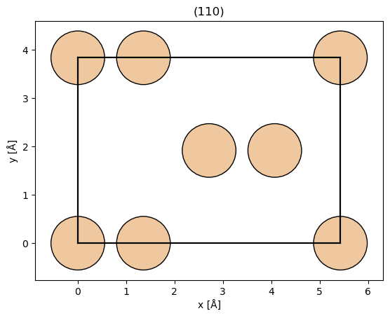
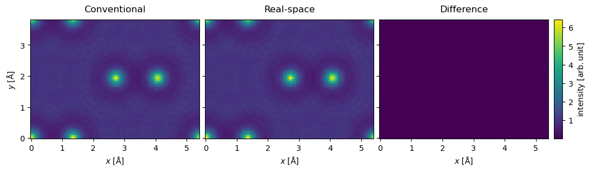
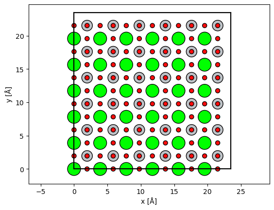
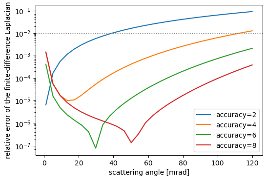
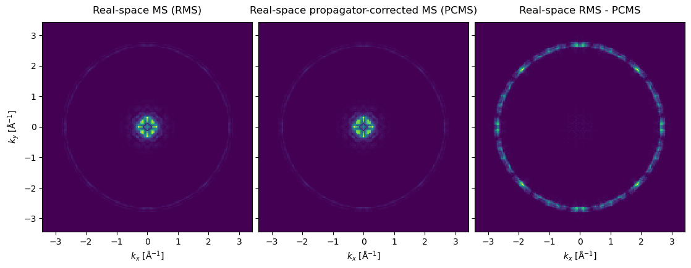
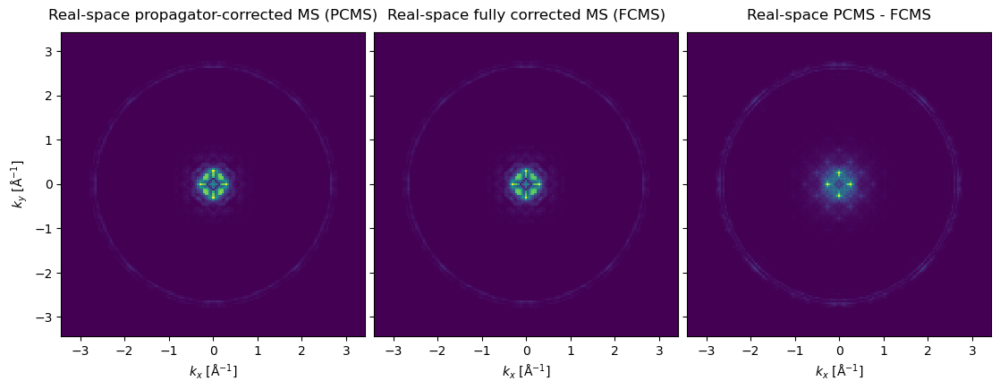
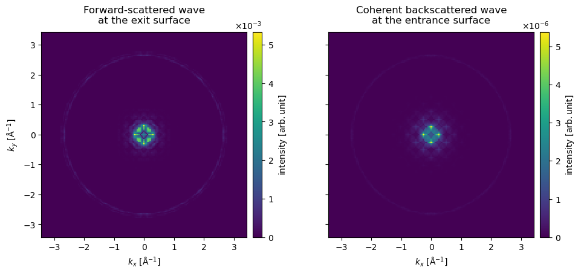
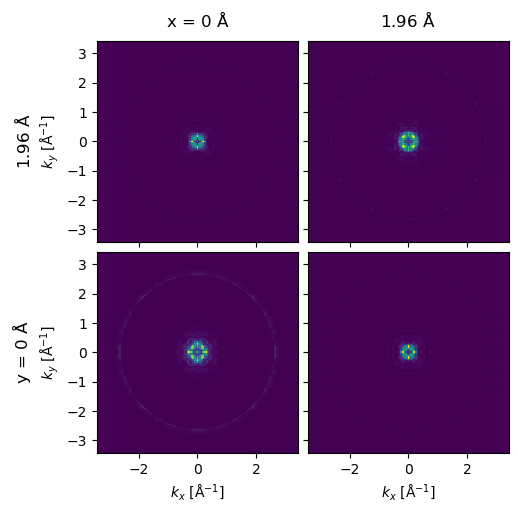

import abtem
import ase
import matplotlib.pyplot as plt
import numpy as np
from abtem.finite_difference import DivergedError
from abtem.multislice import FourierMultislice, RealSpaceMultislice
abtem.config.set({"device": "cpu"});
abtem.config.set({"diagnostics.progress_bar": False});
Real-space multislice#
For certain kinds of situations, it is necessary to run the multislice algorithm fully in real space and not rely on Fourier transforms. This will incur a performance penalty, however, so this method is not used by default.
After the initial simple implementation by Jacob Madsen, this functionality was improved and expanded by Mathijs van den Doel and Georgios Varnavides. The implementation is based on the work of Ming & Chen [MC13], and Chen et al. [CHM+25].
Let’s demonstrate this for Si in the (110) orientation.
desired_rotation = 45
silicon = ase.build.bulk("Si", cubic=False)
# Rotates silicon structure by 45 degrees.
rotated_silicon = silicon.copy()
rotated_silicon.rotate(desired_rotation, "x", rotate_cell=True)
rotated_silicon, transform = abtem.orthogonalize_cell(
rotated_silicon, max_repetitions=10, return_transform=True
)
rotated_silicon.center(axis=2)
abtem.show_atoms(
rotated_silicon, show_periodic=True, scale=0.5, title="(110)", plane="xy"
);

Create a potential. The real-space method requires slightly smaller slices for convergence.
potential_unit = abtem.Potential(
rotated_silicon,
slice_thickness=0.5,
sampling=0.05,
projection="finite",
)
potential = abtem.CrystalPotential(potential_unit, repetitions=(1, 1, 10))
plane_wave = abtem.PlaneWave(energy=200e3)
plane_wave.grid.match(potential)
The multislice algorithm is selected by passing an algorithm object to multislice: FourierMultislice (the default) or RealSpaceMultislice, both imported from abtem.multislice. For the real-space algorithm, you can set the order of the accuracy of the finite difference derivative stencil using the derivative_accuracy keyword. The total number of terms in the series expansion is determined by a convergence criteria.
Note
The default Fourier propagator
As of abTEM 1.1.0, FourierMultislice propagates with the exact free-space propagator (order="exact"), rather than the paraxial (Fresnel) approximation used previously. The two agree at small angles, but only the exact propagator treats spatial frequencies beyond \(k > 1 / \lambda\) as evanescent instead of propagating. The paraxial propagator is still available as FourierMultislice(order=1), which is what we use below so that the Fourier and real-space algorithms are compared at the same order.
exit_wave_cms = plane_wave.multislice(
potential,
algorithm=FourierMultislice(order=1), # paraxial propagator; the default is order="exact"
)
exit_wave_rms = plane_wave.multislice(
potential,
algorithm=RealSpaceMultislice(),
)
abtem.stack((exit_wave_cms, exit_wave_rms, exit_wave_cms-exit_wave_rms), ("Conventional", "Real-space", "Difference")).show(
explode=True, figsize=(12, 4), common_color_scale=True, cbar=True
);
OMP: Info #276: omp_set_nested routine deprecated, please use omp_set_max_active_levels instead.

The calculation may diverge if the slices are too thick, you can catch the DivergedError exception. A better sampling also requires a smaller slice thickness.
potential_unit = abtem.Potential(
rotated_silicon,
slice_thickness=2,
sampling=0.05,
projection="finite",
)
potential = abtem.CrystalPotential(potential_unit, repetitions=(1, 1, 10))
plane_wave = abtem.PlaneWave(energy=200e3)
plane_wave.grid.match(potential)
try:
exit_wave_rms = plane_wave.multislice(
potential,
algorithm=RealSpaceMultislice(),
lazy=False
)
except DivergedError:
print("Calculation diverged!")
Calculation diverged!
Advanced usage#
The real-space method further allows the use of a higher-order Taylor series expansions of the multislice operator. This is particularly motivated for low energy S/TEM applications where the standard high-energy multislice approximation breaks down (below about 30 keV).
To demonstrate this, we will use STO as the specimen model.
unit_cell = ase.Atoms(
symbols="SrTiO3",
scaled_positions=[
[0.0,0.0,0.0],
[0.5,0.5,0.5],
[0.5,0.0,0.5],
[0.5,0.5,0.0],
[0.0,0.5,0.5]
],
cell=[3.9127,3.9127,3.9127],
pbc=True
)
atoms = unit_cell * (6,6,24)
abtem.show_atoms(
atoms,plane='xy',
scale=0.5,
);

potential = abtem.Potential(
atoms,
gpts = (6*40,6*40),
slice_thickness=0.5, # this needs to be small-enough to ensure real-space MS converges
# device='gpu',
projection='finite',
);
Focused probe#
Below we showcase with a focused probe at 30 keV to demonstrate scanned measurements, but all methods also work with planewaves.
energy = 30e3
semiangle_cutoff = 20
converged_probe = abtem.Probe(
semiangle_cutoff=semiangle_cutoff,
energy=energy,
# device='gpu',
).match_grid(
potential
)
# tiny grid_scan for demo purposes
grid_scan = abtem.GridScan(
start=(0,0),
end=(unit_cell.cell[0,0],unit_cell.cell[1,1]),
gpts=2,
);
Multislice algorithm objects#
There are two new algorithm objects, where the conventional multislice operator has been renamed to FourierMultislice, with the following signatures:
@dataclass(frozen=True)
class FourierMultislice:
order: Literal[1, 2, "exact"] = "exact"
expansion_scope: Literal["propagator"] = "propagator"
conjugate: bool = False
transpose: bool = False
@dataclass(frozen=True)
class RealSpaceMultislice:
order: int = 1
expansion_scope: Literal["propagator", "full"] = "propagator"
derivative_accuracy: int = 6
max_terms: int = 80
The order of FourierMultislice selects the free-space propagator. Writing \(x = \lambda^2 k^2\), and dropping the constant phase \(\exp(2 \pi i \Delta z / \lambda)\) common to all of them, the propagator is \(P(\vec{k}) = \exp\left[ i \frac{2 \pi \Delta z}{\lambda} \left( \sqrt{1 - x} - 1 \right) \right]\) for order="exact" (the default since 1.1.0), while order=1 and order=2 are its first- and second-order Taylor expansions in \(x\), the first of which is the familiar paraxial (Fresnel) propagator \(\exp(-i \pi \lambda k^2 \Delta z)\). For \(\lambda k > 1\) the square root becomes imaginary and the exact propagator damps these evanescent components as \(\exp\left[ -\frac{2 \pi \Delta z}{\lambda} \sqrt{x - 1} \right]\), whereas the Taylor expansions propagate them as if they were travelling waves. The truncated orders warn when their maximum phase error inside the antialiasing aperture exceeds \(10^{-2} \ \mathrm{rad}\).
Conventional Fourier methods#
from abtem.multislice import FourierMultislice, RealSpaceMultislice
# Fourier MS of order 1, i.e. the conventional paraxial propagator
# (the default is FourierMultislice(order="exact"))
forward_exit_waves_fourier = converged_probe.multislice(
potential=potential,
scan = [[0,0]],
algorithm=FourierMultislice(order=1)
)
# FourierMultislice also supports the spherical-propagator case, i.e. order 2
forward_exit_waves_fourier_pc = converged_probe.multislice(
potential=potential,
scan = [[0,0]],
algorithm=FourierMultislice(order=2)
)
# # higher orders give a ValueError; use order="exact" (the default) or the
# # real-space algorithm below instead
# forward_exit_waves_fourier = converged_probe.multislice(
# potential=potential,
# scan = [[0,0]],
# algorithm=FourierMultislice(order=3)
# )
# # less common parameters include conjugate and transpose options
# forward_exit_waves_fourier = converged_probe.multislice(
# potential=potential,
# scan = [[0,0]],
# algorithm=FourierMultislice(conjugate=True,transpose=False)
# )
forward_exit_waves_fourier_stack = abtem.stack(
(
forward_exit_waves_fourier,
forward_exit_waves_fourier_pc,
forward_exit_waves_fourier - forward_exit_waves_fourier_pc
),
(
"Fourier conventional MS (CMS)",
"Fourier propagator-corrected MS (PCMS)",
"Fourier CMS - PCMS"
)
)
forward_exit_waves_fourier_stack.diffraction_patterns().show(explode=True,figsize=(12,4));
The finite-difference Laplacian#
FourierMultislice evaluates \(\nabla_{xy}^2\) by multiplying by \(-4\pi^2 k^2\) in reciprocal space — exact for a band-limited signal, but only ever a single multiplication: propagation and transmission remain two separate steps, alternating between Fourier and real space. RealSpaceMultislice instead evaluates \(\nabla_{xy}^2\) directly on the real-space grid, using a centered finite-difference stencil (abtem.finite_difference.LaplaceOperator). Treating the Laplacian as a differential operator lets propagation and transmission be combined and corrected together — the basis for expansion_scope="full" above.
derivative_accuracy sets the order of that stencil. A centered second-derivative stencil of accuracy \(a\) reads \(a + 1\) neighboring pixels along each axis; a few orders, from abtem.finite_difference.finite_difference_coefficients:
from abtem.finite_difference import finite_difference_coefficients
for accuracy in (2, 4, 6, 8):
coefficients = finite_difference_coefficients(derivative=2, accuracy=accuracy)
print(f"accuracy={accuracy}: {len(coefficients)} points, {np.round(coefficients, 3)}")
accuracy=2: 3 points, [ 1. -2. 1.]
accuracy=4: 5 points, [-0.083 1.333 -2.5 1.333 -0.083]
accuracy=6: 7 points, [ 0.011 -0.15 1.5 -2.722 1.5 -0.15 0.011]
accuracy=8: 9 points, [-2.000e-03 2.500e-02 -2.000e-01 1.600e+00 -2.847e+00 1.600e+00
-2.000e-01 2.500e-02 -2.000e-03]
A wider stencil approximates the derivative to a higher order in the pixel spacing, at the cost of reading more neighboring pixels. The accuracy/reach trade-off is visible directly: applying LaplaceOperator to plane waves of increasing spatial frequency and comparing against the exact eigenvalue \(-4\pi^2 k^2\) shows each order tolerating a larger scattering angle before its truncation error takes over.
from abtem.finite_difference import LaplaceOperator
from abtem.waves import Waves
gpts = 512
sampling = potential.sampling[0]
x = np.arange(gpts) * sampling
wavelength = converged_probe.wavelength
def plane_wave(k):
array = np.exp(2j * np.pi * k * x)[None, :] * np.ones((gpts, 1), dtype=complex)
return Waves(array, sampling=(sampling, sampling), energy=energy)
angles = np.linspace(1, 120, 30) # mrad
wavevectors = angles * 1e-3 / wavelength
fig, ax = plt.subplots(figsize=(6, 4))
for accuracy in (2, 4, 6, 8):
laplace = LaplaceOperator(accuracy=accuracy)
errors = []
for k in wavevectors:
waves = plane_wave(k)
original = waves.array[0, gpts // 2]
laplace.apply(waves)
exact = -4 * np.pi**2 * k**2 * original
errors.append(abs(waves.array[0, gpts // 2] - exact) / abs(exact))
ax.semilogy(angles, errors, label=f"accuracy={accuracy}")
ax.axhline(1e-2, color="gray", ls=":", lw=1)
ax.set_xlabel("scattering angle [mrad]")
ax.set_ylabel("relative error of the finite-difference Laplacian")
ax.legend();

Each order’s error still grows with scattering angle; a higher order simply pushes that growth out further (the sharp dips are where a stencil’s truncation error crosses zero, not points of special accuracy). At this energy and sampling, accuracy=2 crosses the \(1\%\) line — the same order of magnitude as the phase-error warning threshold FourierMultislice’s truncated orders use above — around \(40 \ \mathrm{mrad}\), and accuracy=4 around \(113 \ \mathrm{mrad}\); the default accuracy=6 stays under it out past \(120 \ \mathrm{mrad}\), well beyond a typical convergence angle. The cost of a wider stencil falls on this one convolution per slice, and is modest next to the antialiasing FFTs FourierMultislice needs at every step instead — see the performance tips for how the two compare on a full simulation.
When real-space propagation is preferable. Now that FourierMultislice’s free-space propagator is exact by default (see above), the reciprocal-space half of the split-operator scheme is no longer the limiting approximation at any energy or angle. The remaining reasons to reach for RealSpaceMultislice are: (1) expansion_scope="full", which corrects the interaction between propagation and transmission within a slice — an error the propagate-then-transmit split makes at any energy, growing for low-energy electrons where the phase advance per slice is larger; and (2) tracking the coherent backscattered wave, demonstrated next, which has no counterpart in a forward-only Fourier-space scheme.
Real-space methods#
# Real-space MS of order 1
# Note: we have added an antialias aperture for consistency.
forward_exit_waves_realspace = converged_probe.multislice(
potential=potential,
scan = [[0,0]],
algorithm = RealSpaceMultislice()
)
# Real-space MS of order 3 in the propagator
forward_exit_waves_realspace_pc = converged_probe.multislice(
potential=potential,
scan = [[0,0]],
algorithm = RealSpaceMultislice(order=3)
)
# Real-space MS of order 3 in the propagator and potential
forward_exit_waves_realspace_fc = converged_probe.multislice(
potential=potential,
scan = [[0,0]],
algorithm = RealSpaceMultislice(order=3, expansion_scope="full")
)
# # Less common parameters include finite-difference derivative order and maximum exponential series terms.
# forward_exit_waves_fourier = converged_probe.multislice(
# potential=potential,
# scan = [[0,0]],
# lazy=False,
# algorithm = RealSpaceMultislice(derivative_accuracy=8,max_terms=60)
# )
forward_exit_waves_realspace_stack = abtem.stack(
(
forward_exit_waves_realspace,
forward_exit_waves_realspace_pc,
forward_exit_waves_realspace - forward_exit_waves_realspace_pc
),
(
"Real-space MS (RMS)",
"Real-space propagator-corrected MS (PCMS)",
"Real-space RMS - PCMS"
)
)
forward_exit_waves_realspace_stack.diffraction_patterns().show(explode=True,figsize=(12,4));
forward_exit_waves_realspace_stack_2 = abtem.stack(
(
forward_exit_waves_realspace_pc,
forward_exit_waves_realspace_fc,
forward_exit_waves_realspace_pc - forward_exit_waves_realspace_fc
),
(
"Real-space propagator-corrected MS (PCMS)",
"Real-space fully corrected MS (FCMS)",
"Real-space PCMS - FCMS"
)
)
forward_exit_waves_realspace_stack_2.diffraction_patterns().show(explode=True,figsize=(12,4));


Coherent backscattered wave#
The real-space method also allows us to include the effect of backscattered electrons. Backscattering requires we keep track of the scattered waves as a function of depth, for which we use exit_planes in the potential.
Please note that this is mostly tracking the intensity lost from the forward-propagating wave – not backscattered electrons in the EBSD sense.
potential_exit_planes = abtem.Potential(
atoms,
gpts = (6*40,6*40),
slice_thickness=0.5,
exit_planes=1,
# device='gpu',
projection='finite',
);
forward_exit_waves_realspace_fc, backward_exit_waves_realspace_fc = converged_probe.multislice(
potential=potential_exit_planes,
scan = [[0,0]],
algorithm = RealSpaceMultislice(order=3,expansion_scope="full"),
return_backscattered = True
);
bs_exit_waves_realspace_stack = abtem.stack(
(
forward_exit_waves_realspace_fc[-1],
backward_exit_waves_realspace_fc[0],
),
(
"Forward-scattered wave\nat the exit surface",
"Coherent backscattered wave\nat the entrance surface"
)
)
bs_exit_waves_realspace_stack.diffraction_patterns().show(explode=True,figsize=(12,4),cbar=True);

Scan and detectors#
# Work with scan axes
forward_exit_waves_realspace_pc_scan = converged_probe.multislice(
potential=potential,
scan = grid_scan,
algorithm = RealSpaceMultislice(order=3)
)
forward_exit_waves_realspace_pc_scan.diffraction_patterns().show(explode=True);

# Work with detectors
pixelated_realspace_pc, annular_realspace_pc = converged_probe.multislice(
potential=potential,
scan = grid_scan,
detectors= [abtem.PixelatedDetector(), abtem.AnnularDetector(inner=30,outer=100)],
algorithm = RealSpaceMultislice(order=3)
).compute();
# Inclusion of backscattering simply adds an extra WavesDetector at the end
forward_pixelated_realspace_fc, forward_annular_realspace_fc, backward_exit_waves_realspace_fc = converged_probe.multislice(
potential=potential_exit_planes,
scan = [[0,0]],
detectors= [abtem.PixelatedDetector(), abtem.AnnularDetector(inner=30,outer=100)],
algorithm = RealSpaceMultislice(order=3,expansion_scope="full"),
return_backscattered = True
).compute();